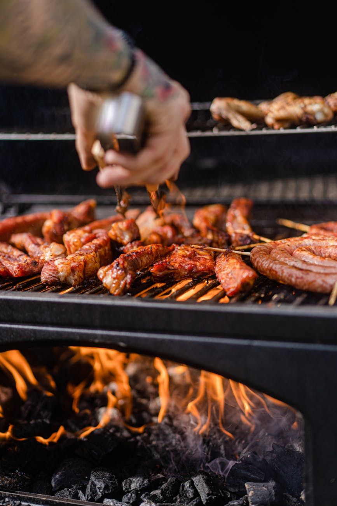

Eventos privados
Reuniones familiares, aniversarios, cumpleaños y comidas de empresa en un entorno cómodo, cuidado y cercano.
Organizamos comidas familiares, encuentros de empresa, catering y banquetes con una puesta en escena elegante, cómoda y pensada para disfrutar sin prisas.
Reuniones familiares, aniversarios, cumpleaños y comidas de empresa en un entorno cómodo, cuidado y cercano.

Llevamos nuestra cocina a otro espacio con una propuesta equilibrada entre sabor, organización y una presencia cuidada.

Menús especiales para grupos grandes con una selección de platos fiel al carácter del asador y a su manera de entender la mesa.
Una selección de propuestas para adaptarnos al tipo de celebración, al espacio y al ritmo que necesita cada encuentro.
Reuniones familiares, aniversarios, cumpleaños o comidas de empresa en un entorno cómodo y cuidado.
Llevamos nuestra cocina a otro espacio con una propuesta equilibrada entre sabor, organización y presencia.
Menús especiales para grupos grandes con una selección de platos fiel al carácter del asador.
Si buscas un evento con cocina de verdad, servicio cercano y una presentación cuidada, podemos ayudarte a darle forma.